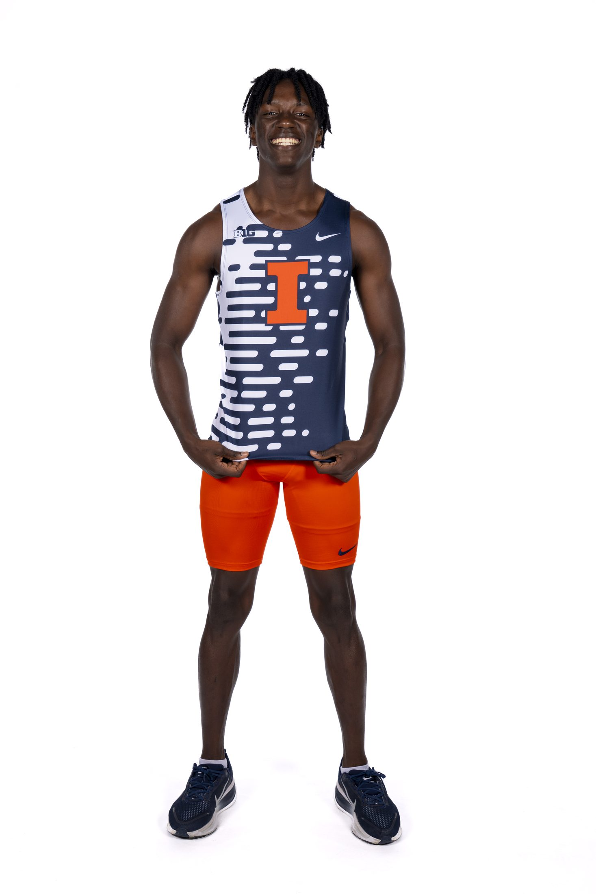
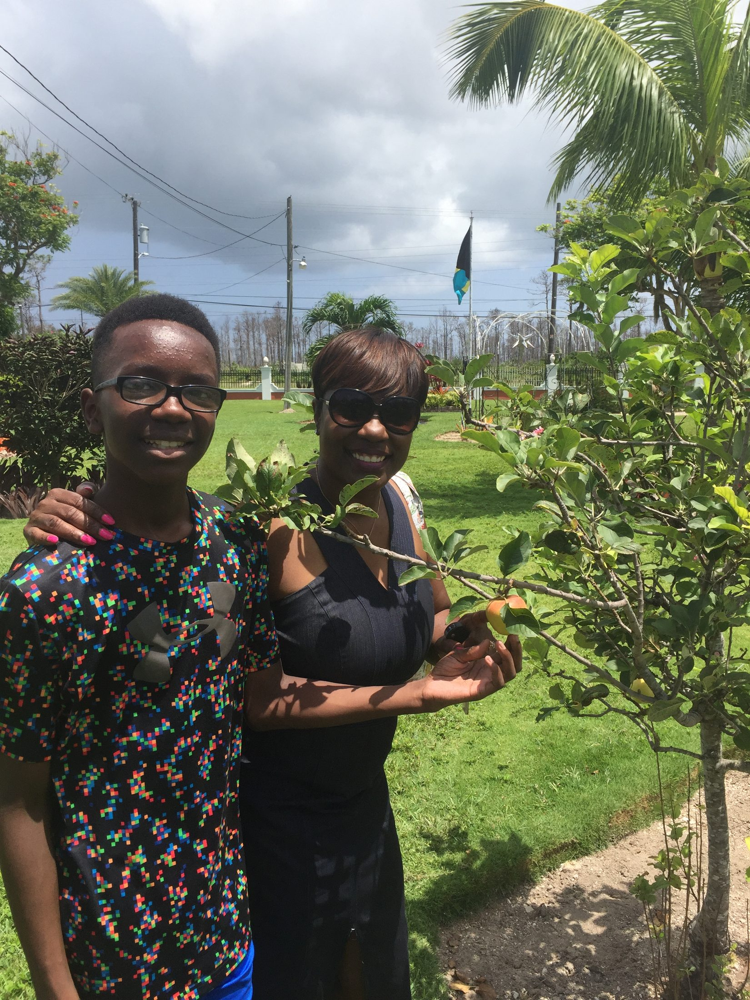
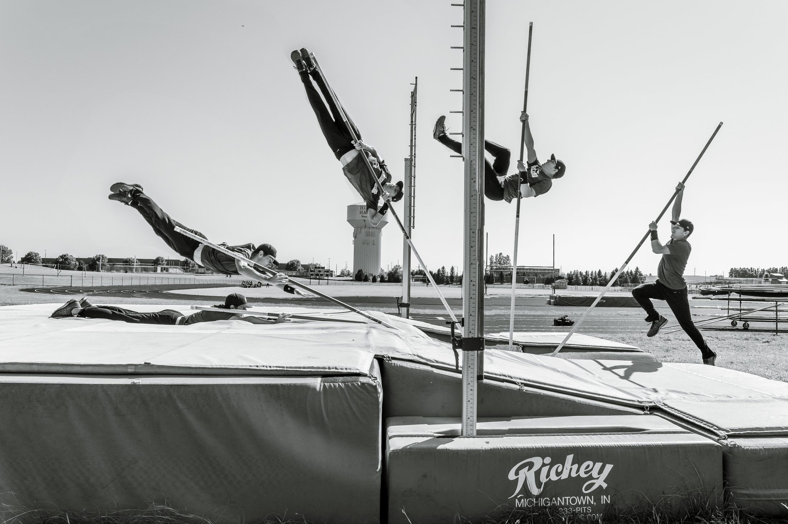
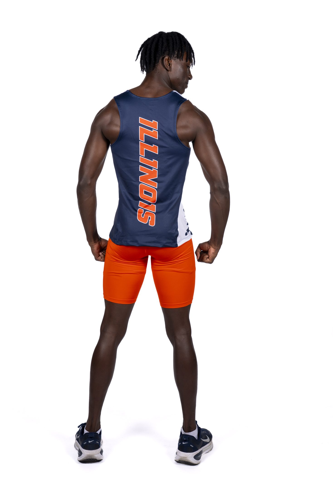
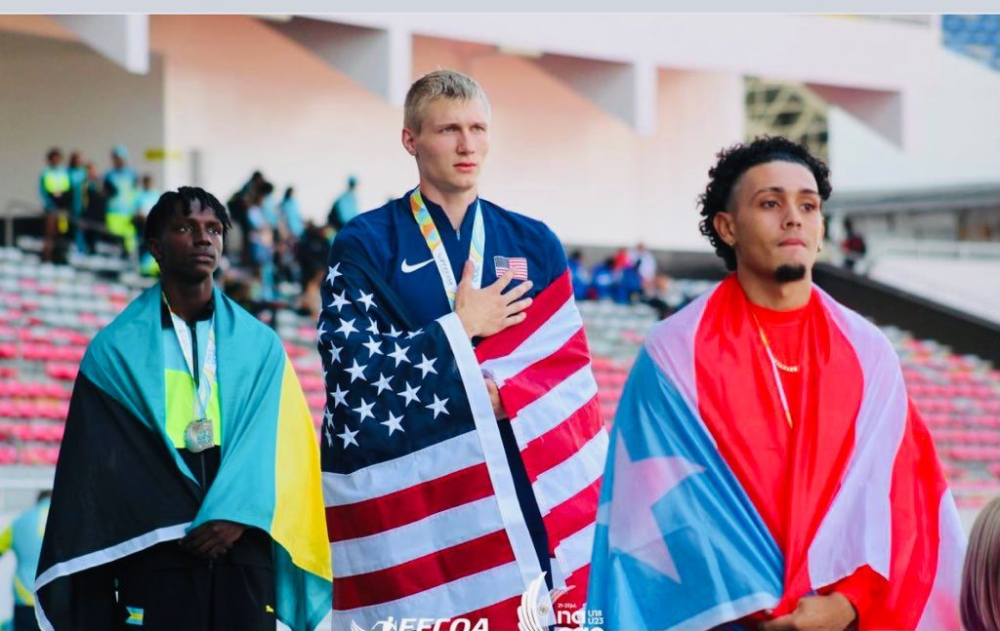
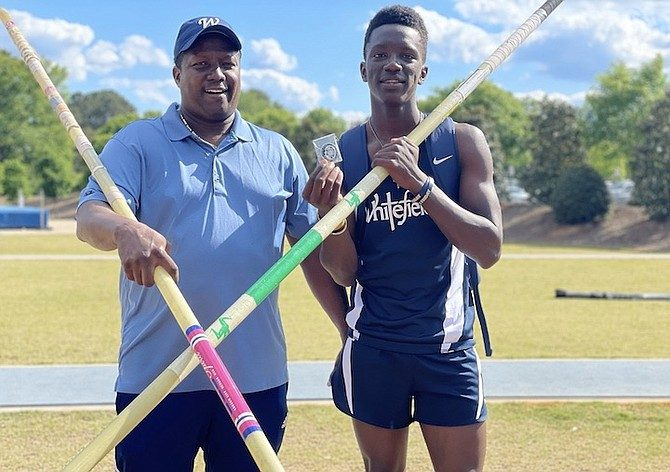
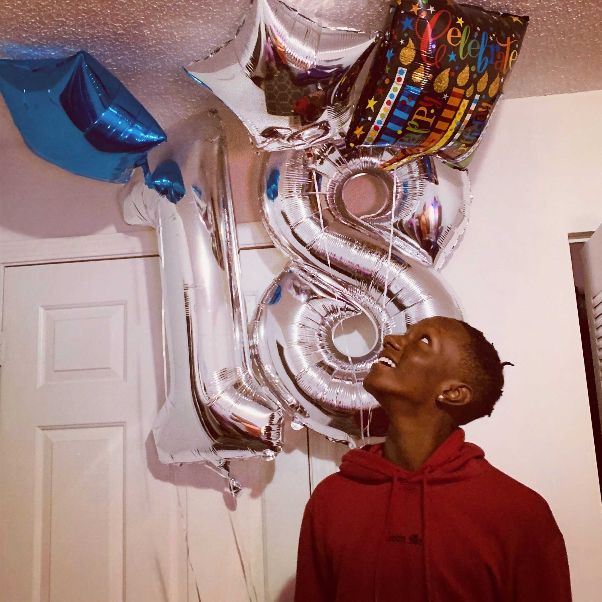
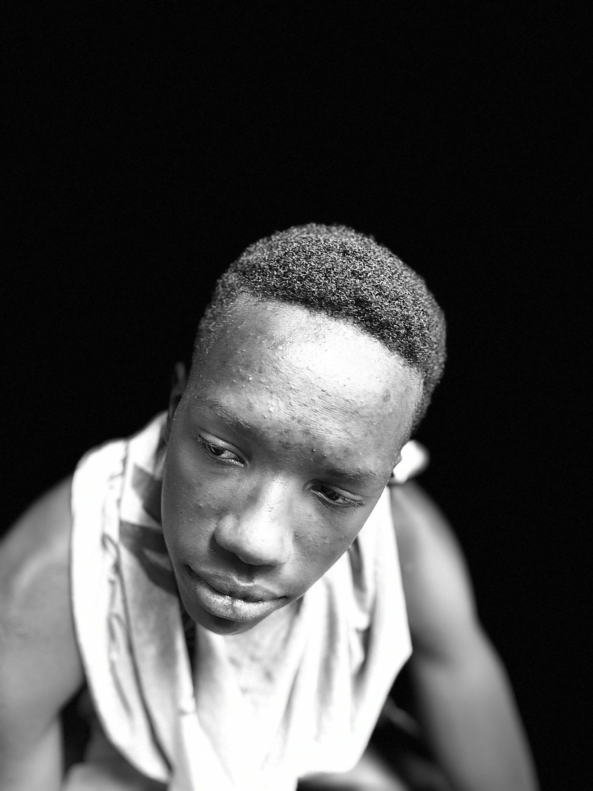
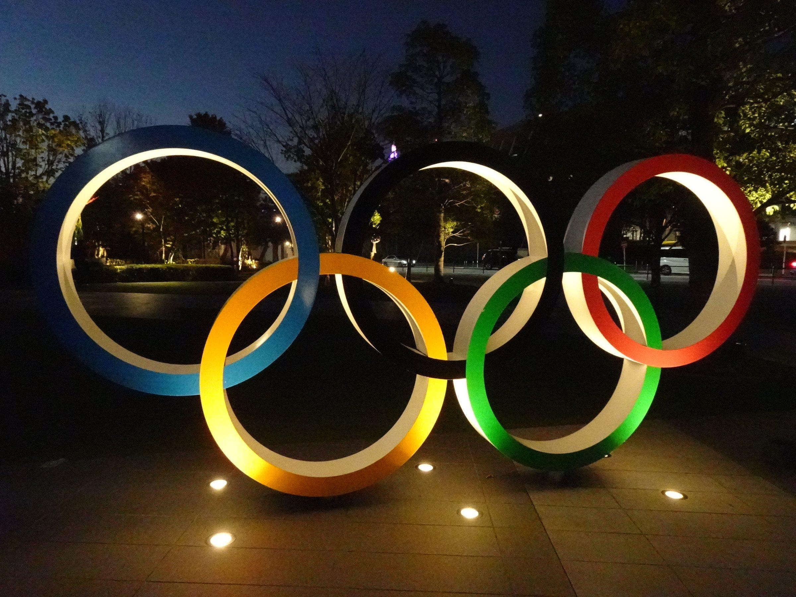

The Vaulter.Bahamian.Student.Builder.Son.Vaulter.


Raised in Georgia, Bahamian by blood and by passport. A citizen of two countries.
Brenden Vanderpool grew up in Smyrna, Georgia, and competes for the Bahamas. Both are home. The accent comes out in Nassau, the CARIFTA vest comes out every Easter, and the school jacket has said Whitefield, Samford and now Illinois. He was born on June 10, 2005.

Everything he does in the event runs through his father.
Brent Vanderpool vaulted for the Bahamas at CARIFTA in the eighties, competed at Delaware State and George Washington, and set the national record at 4.89 metres in 1987. He built a pit in the backyard out of a mattress. Half the neighbourhood went on to vault for the Bahamas because of it. Today he writes Brenden's strength programme and is the voice on the phone before every meet.

A Communications major who builds things when the season ends.
He studies Communication at the University of Illinois, class of 2027. Off the runway he builds: websites, systems, the tools he wished existed. The camera is part of the work now. So is the writing.

It is easier to list where he has stood on a podium than where he hasn't.
Kingston, Nassau, Grenada, Costa Rica, Lima. Two Georgia state titles, two Southern Conference titles, three CARIFTA golds in a row, a NACAC silver and a Pan American bronze, all before turning twenty-one. The hardware is below. Drag it.


Fifteen, and about to pick up a pole for the first time.
September 2020. A month later he was on a school field in Georgia, with a borrowed pit and his father watching, clearing a bar for the first time. Three years after this photo, the national record was his.
Everything so far

Loud on the runway, quieter everywhere else.
Teammates say the pole vaulters have the most personality on the track team, and he is the one with the camera. He listens more than he reads, thinks out loud, and keeps a running file of lines he has lived. A few of them are on the What I stand for page. The rest are in the community.
